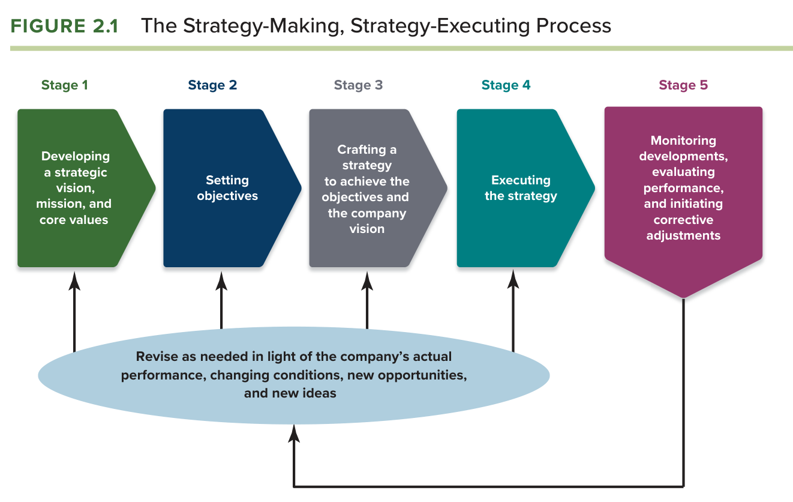
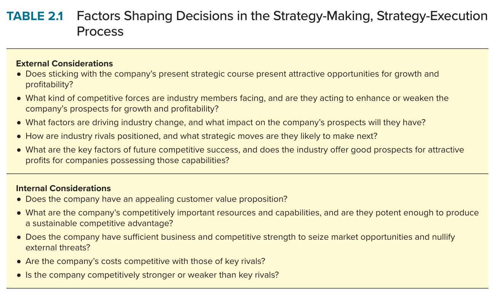
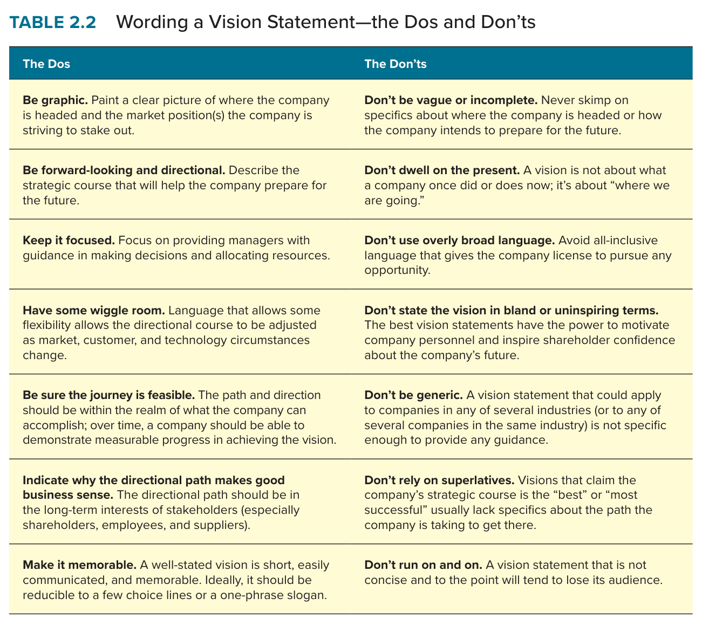
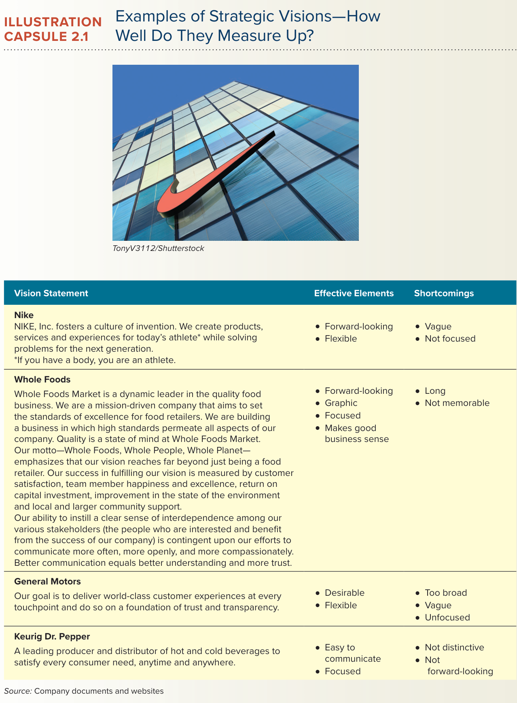
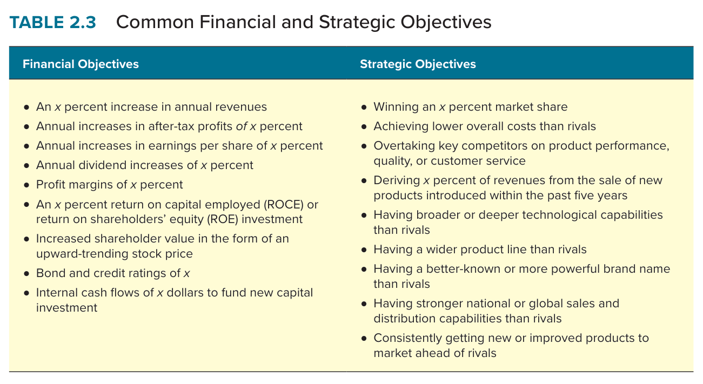
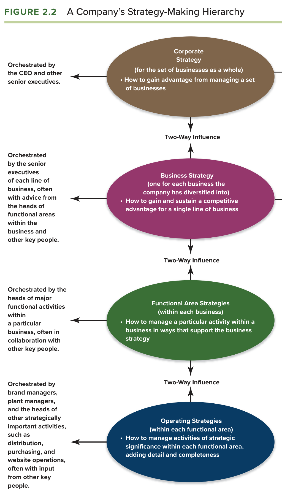

| Buku acuan | Thompson, Peteraf, Gamble & Strickland, Crafting & Executing Strategy: The Quest for Competitive Advantage (edisi ke-24, 2024), Bab 2 “Charting a Company’s Direction: Its Vision, Mission, Objectives, and Strategy”. |
| Framework sesi | Structure-Conduct-Performance (SCP) Paradigm (Group 2) sebagaimana ditetapkan silabus untuk sesi 3 bersama Bab 2. |
| Kasus penerapan | Grant (2010), Case 9 “AirAsia: The World’s Lowest Cost Airline” untuk proses lima tahap, dan Case 6 “Manchester United: Preparing for Life without Ferguson” untuk tujuan finansial lawan strategis serta tata kelola dan suksesi. |
| Standar dosen | RPKPS “@2026 AOL Course Outline SM MM_JKT SEMBA”, termasuk rubrik nilai, panduan analisis kasus (Appendix 3), struktur term paper, learning diary, dan sesi framework. |
| Sesi terkait | Sesi 3: Ch. 02 + SCP Paradigm (Group 2). Sesi 2: Ch. 01 (tiga tes strategi pemenang dipakai pada tahap evaluasi). Sesi 4: Ch. 03 (lima kekuatan sebagai turunan SCP). |
Modul ini ditulis sebagai uraian naratif, bukan ringkasan. Setiap sub-bagian framework mengikuti urutan yang sama: pengertian dan kedudukannya dalam buku, uraian setiap dimensi beserta mekanismenya, cara seorang CEO menggunakannya, penerapan pada kasus dengan angka, dan kesalahan yang menurunkan nilai. Bacalah gambar asli buku terlebih dahulu pada setiap sub-bagian, lalu paragraf-paragraf yang menjelaskannya, karena paragraf tersebut merujuk langsung pada unsur-unsur gambar.
Bab 2 dibahas pada sesi ketiga dengan sub-tujuan agar mahasiswa memahami proses penyusunan dan pelaksanaan strategi, mulai dari visi, misi, dan nilai, sampai penetapan tujuan, perumusan strategi, eksekusi, dan evaluasi (Almahendra, 2026). Pada sesi yang sama Kelompok 2 mempresentasikan framework tambahan berupa Structure-Conduct-Performance Paradigm, yang selanjutnya disingkat SCP. Pemasangan ini memberi petunjuk tentang cara dosen membaca bab. Bab 2 menguraikan proses lima tahap yang berjalan di dalam perusahaan, sedangkan SCP menjelaskan bahwa kinerja perusahaan ditentukan oleh struktur industri di luar perusahaan melalui perilaku yang dipilihnya. Dengan memasangkan keduanya, dosen tampaknya ingin menegaskan bahwa visi, tujuan, dan strategi yang disusun dalam proses lima tahap tidak boleh lahir dari keinginan manajemen semata, melainkan harus dibentuk oleh pembacaan yang jujur atas struktur industri tempat perusahaan bersaing.
Bab 2 juga merupakan bab yang paling langsung berhubungan dengan tujuan mata kuliah kedua, yaitu kemampuan menerjemahkan strategi menjadi rencana implementasi dan mengevaluasi dampaknya (Almahendra, 2026). Tahap kedua tentang penetapan tujuan, tahap keempat tentang eksekusi, dan tahap kelima tentang evaluasi adalah landasan konseptual untuk bagian rencana implementasi dalam term paper, yang menuntut indikator kinerja, jadwal, penanggung jawab, sumber daya, dan risiko. Oleh karena itu, penguasaan Bab 2 tidak diuji dengan pertanyaan tentang apa itu visi, melainkan dengan kemampuan menyusun tujuan yang terukur, membedakan tujuan finansial dari tujuan strategis, dan menunjukkan bagaimana tujuan itu diturunkan ke setiap tingkat organisasi.
Tiga dari tujuh prinsip cara berpikir dosen paling menentukan pada Bab 2. Prinsip kedua, setiap analisis harus menyentuh implementasi, adalah inti bab ini, karena Bab 2 sendiri menyatakan bahwa mengelola implementasi adalah bagian yang paling menuntut dan paling memakan waktu dalam proses manajemen strategik (Thompson et al., 2024, hlm. 40). Prinsip ketiga, analisis harus berujung keputusan, tampak pada tahap kelima yang menjadikan evaluasi sebagai pemicu keputusan untuk melanjutkan atau mengubah arah. Prinsip keempat, bukti kuantitatif, tampak pada tuntutan buku agar tujuan bersifat spesifik, terukur, berbatas waktu, menantang, dan dapat dicapai (Thompson et al., 2024, hlm. 30).
Pemasangan dengan SCP memberi petunjuk tambahan dengan tingkat keyakinan [Kemungkinan Besar]. Dosen tampaknya ingin mahasiswa memahami bahwa visi yang baik bukan visi yang paling menginspirasi, melainkan visi yang layak secara struktural. Sebuah maskapai yang bervisi menjadi maskapai berbiaya terendah di dunia hanya masuk akal jika struktur industrinya memberi ruang bagi pemain berbiaya rendah, dan sebuah klub sepak bola yang bertujuan menjadi klub paling menguntungkan hanya masuk akal jika struktur pendapatan industrinya memungkinkan laba. SCP adalah alat untuk menguji kelayakan itu sebelum visi diumumkan.
SCP adalah kerangka dari ekonomi organisasi industri yang dikembangkan oleh Edward Mason dan Joe Bain pada 1930-an sampai 1950-an dan menyatakan bahwa struktur industri menentukan perilaku perusahaan, dan perilaku perusahaan menentukan kinerja. Dimensi pertama adalah struktur, yang mencakup jumlah dan konsentrasi pesaing, hambatan masuk, tingkat diferensiasi produk, struktur biaya, dan integrasi vertikal. Dimensi kedua adalah perilaku, yang mencakup kebijakan harga, strategi produk dan iklan, investasi kapasitas, riset dan pengembangan, dan taktik terhadap pesaing. Dimensi ketiga adalah kinerja, yang mencakup profitabilitas, efisiensi produksi dan alokasi, kemajuan teknologi, dan kesejahteraan konsumen. Ukurannya adalah rasio konsentrasi dan tinggi hambatan masuk untuk struktur, pola harga dan investasi untuk perilaku, serta margin dan tingkat pengembalian modal untuk kinerja. Keluarannya adalah penjelasan mengapa suatu industri lebih menguntungkan dari industri lain, dan mengapa perusahaan di dalamnya berperilaku seperti yang terlihat.
Versi asli SCP bersifat satu arah dari struktur ke kinerja, dan versi inilah yang melahirkan kerangka lima kekuatan Porter pada Bab 3, karena Porter pada dasarnya memindahkan SCP dari sudut pandang regulator ke sudut pandang perusahaan. Namun perkembangan kemudian, terutama dari mazhab Chicago dan dari pandangan berbasis sumber daya, menunjukkan bahwa panahnya juga berjalan sebaliknya: perilaku perusahaan dapat mengubah struktur, misalnya ketika inovasi menurunkan hambatan masuk, dan kinerja yang unggul dapat berasal dari sumber daya perusahaan, bukan dari struktur industrinya. Bagi Bab 2, dua arah ini sama pentingnya. Arah pertama menuntut agar visi dan tujuan disusun setelah membaca struktur, dan arah kedua membuka kemungkinan bahwa strategi yang berani, sebagaimana strategi AirAsia pada 2001, dapat mengubah struktur industri yang semula tampak tidak ramah bagi pendatang.
Manfaat SCP dalam bisnis internasional adalah memberi cara membandingkan industri yang sama di negara yang berbeda. Industri penerbangan di Asia Tenggara sebelum liberalisasi memiliki struktur yang terkonsentrasi dengan maskapai nasional yang dilindungi, sehingga perilaku pemainnya adalah harga tinggi dan kapasitas terbatas, dan kinerjanya adalah laba yang bergantung pada proteksi. Setelah liberalisasi, struktur berubah, hambatan masuk turun, dan AirAsia dapat masuk dengan perilaku harga rendah yang menghasilkan kinerja berupa pertumbuhan penumpang dari nol menjadi 11,81 juta pada 2008 (Grant, 2010). Seorang CEO yang memahami SCP akan menyusun visi ekspansi lintas negara dengan bertanya lebih dahulu apakah struktur industri di negara tujuan sudah berubah seperti di negara asal, dan pertanyaan inilah yang membedakan visi yang layak dari visi yang sekadar berani.
Bab 2 berjudul Charting a Company's Direction: Its Vision, Mission, Objectives, and Strategy dan memuat lima tujuan pembelajaran (Thompson et al., 2024, hlm. 20). Tujuan pertama adalah memahami mengapa manajer perlu memiliki visi strategis yang jelas. Tujuan kedua adalah menjelaskan pentingnya menetapkan tujuan strategis sekaligus tujuan finansial. Tujuan ketiga adalah menjelaskan mengapa inisiatif strategis pada berbagai tingkat organisasi harus dikoordinasikan dengan ketat. Tujuan keempat adalah mengenali apa yang harus dilakukan perusahaan untuk mencapai keunggulan operasi dan mengeksekusi strategi dengan mahir. Tujuan kelima adalah memahami peran dan tanggung jawab dewan direksi dalam mengawasi proses manajemen strategik. Kelima tujuan ini disusun mengikuti lima tahap pada Figure 2.1, sehingga peta bab sekaligus adalah peta proses.
Framework yang harus dikuasai dari bab ini ada dua belas dan seluruhnya diuraikan pada Bagian B: proses lima tahap (Figure 2.1), faktor pembentuk keputusan strategis (Table 2.1), visi strategis dan kaidah perumusannya (Table 2.2 dan Capsule 2.1), pernyataan misi, nilai inti, titik belok strategis, tujuan dan lima kriterianya, tujuan peregangan, tujuan finansial dan strategis (Table 2.3), balanced scorecard, hierarki penyusunan strategi (Figure 2.2), rencana strategis, sepuluh aspek eksekusi, evaluasi dan koreksi, serta empat kewajiban dewan direksi dan pelajaran tata kelola dari Volkswagen (Capsule 2.4). Tidak ada satu pun yang boleh tertinggal, karena dosen menilai kelengkapan framework sebagai syarat masuk, bukan sebagai nilai tambah.

Figure 2.1 menggambarkan proses manajemen strategik sebagai lima tahap yang saling terkait dan terintegrasi. Tahap pertama adalah mengembangkan visi strategis, pernyataan misi, dan nilai inti. Tahap kedua adalah menetapkan tujuan. Tahap ketiga adalah merumuskan strategi untuk mencapai tujuan dan visi. Tahap keempat adalah mengeksekusi strategi. Tahap kelima adalah memantau perkembangan, mengevaluasi kinerja, dan melakukan penyesuaian korektif (Thompson et al., 2024, hlm. 21 sampai 23). Panah balik di bagian bawah gambar menegaskan bahwa proses ini bukan garis lurus melainkan lingkaran: setiap tahap dapat direvisi berdasarkan kinerja aktual, kondisi yang berubah, peluang baru, dan gagasan baru.
Mekanisme yang membuat kelima tahap ini bekerja adalah hubungan sebab akibat antar tahap. Visi memberi arah, tujuan mengubah arah menjadi target yang dapat diukur, strategi menjelaskan cara mencapai target, eksekusi mewujudkan strategi, dan evaluasi membandingkan hasil dengan target untuk menentukan tahap mana yang harus diperbaiki. Buku menegaskan bahwa tahap kelima adalah pemicu keputusan untuk melanjutkan atau mengubah visi, tujuan, strategi, model bisnis, atau cara eksekusi (Thompson et al., 2024, hlm. 41). Dengan kata lain, evaluasi tidak berhenti pada penilaian kinerja, tetapi harus mendiagnosis apakah kegagalan berasal dari strategi yang buruk, eksekusi yang buruk, atau keduanya.
Buku memberi satu konsep tambahan pada tahap ini, yaitu titik belok strategis. Titik belok strategis adalah titik ketika tingkat perubahan industri menuntut manajemen mempertimbangkan perubahan visi strategis (Thompson et al., 2024, hlm. 22). Pada titik ini manajemen menghadapi keputusan yang sulit, karena meninggalkan jalur yang mapan mengandung risiko besar, tetapi menanggapi perubahan pasar tepat waktu mengurangi kemungkinan terjebak dalam bisnis yang stagnan. Bagi seorang CEO, konsep ini penting karena mengingatkan bahwa evaluasi pada tahap kelima kadang-kadang harus kembali ke tahap pertama, bukan hanya ke tahap ketiga atau keempat, dan bahwa mengenali titik belok lebih awal adalah salah satu ujian terberat kepemimpinan strategis.

Table 2.1 memuat sepuluh pertanyaan yang membentuk keputusan pada setiap tahap proses, lima di antaranya eksternal dan lima internal. Pertanyaan eksternal menanyakan apakah jalur strategis saat ini menawarkan peluang yang menarik, kekuatan kompetitif apa yang dihadapi industri, faktor apa yang menggerakkan perubahan industri, bagaimana posisi pesaing dan langkah mereka berikutnya, serta apa faktor kunci keberhasilan masa depan. Pertanyaan internal menanyakan apakah perusahaan memiliki proposisi nilai yang menarik, apakah sumber daya dan kapabilitasnya cukup kuat untuk menghasilkan keunggulan berkelanjutan, apakah perusahaan cukup kuat untuk merebut peluang dan menetralkan ancaman, apakah biayanya kompetitif, dan apakah perusahaan lebih kuat atau lebih lemah dari pesaing utama (Thompson et al., 2024, hlm. 23).
Tabel ini adalah jembatan antara Bab 2 dan Bab 3 sampai Bab 4, karena lima pertanyaan eksternal dijawab oleh alat-alat Bab 3 dan lima pertanyaan internal dijawab oleh alat-alat Bab 4. Kedudukannya dalam Bab 2 adalah sebagai pengingat bahwa proses lima tahap tidak berjalan dalam ruang hampa. Visi yang disusun pada tahap pertama dan strategi yang dirumuskan pada tahap ketiga harus menjawab sepuluh pertanyaan ini, dan inilah tempat SCP masuk: lima pertanyaan eksternal pada dasarnya adalah pertanyaan tentang struktur industri, dan lima pertanyaan internal adalah pertanyaan tentang apakah perilaku perusahaan sanggup menghasilkan kinerja di dalam struktur tersebut.
Visi strategis adalah pandangan manajemen puncak tentang arah jangka panjang perusahaan dan bauran produk, pasar, dan pelanggan yang dianggap optimal untuk masa depan. Visi menggambarkan aspirasi manajemen tentang masa depan, memberi pandangan panorama tentang ke mana perusahaan menuju, dan memberi alasan yang meyakinkan mengapa arah itu masuk akal secara bisnis (Thompson et al., 2024, hlm. 24). Fungsi visi ada empat: mengarahkan organisasi, memetakan jalur strategis, membangun komitmen pada arah masa depan, dan membentuk identitas organisasi. Buku memberi contoh visi Google untuk mengorganisasi informasi dunia dan membuatnya dapat diakses secara universal, dan mengkritik visi-visi yang generik seperti menjadi pemimpin global dan pilihan pertama pelanggan, karena visi semacam itu dapat berlaku untuk perusahaan mana pun di industri mana pun.

Table 2.2 memberi delapan kaidah positif dan delapan larangan. Kaidah positifnya adalah bersifat grafis, berorientasi ke depan dan memberi arah, terfokus, memiliki ruang gerak, dapat dicapai, menunjukkan alasan bisnis, mudah diingat, dan singkat. Larangannya adalah jangan samar, jangan berkutat pada masa kini, jangan memakai bahasa yang terlalu luas, jangan hambar, jangan generik, jangan mengandalkan superlatif, dan jangan bertele-tele (Thompson et al., 2024, hlm. 25). Mekanisme di balik kaidah ini adalah bahwa visi hanya bernilai sebagai alat manajemen apabila ia dapat dipakai sebagai titik acuan oleh manajer di semua tingkat ketika mengambil keputusan strategis. Visi yang samar tidak dapat dipakai untuk menolak sebuah usulan, dan visi yang tidak dapat dipakai untuk menolak bukanlah alat manajemen.

Illustration Capsule 2.1 menunjukkan cara memakai Table 2.2 sebagai alat kritik. Visi Nike dinilai berorientasi ke depan dan fleksibel tetapi samar dan tidak terfokus; visi Whole Foods dinilai grafis dan terfokus tetapi terlalu panjang dan tidak mudah diingat; visi General Motors dinilai diinginkan dan fleksibel tetapi terlalu luas, samar, dan tidak terfokus; visi Keurig Dr. Pepper dinilai mudah dikomunikasikan dan terfokus tetapi tidak khas dan tidak berorientasi ke depan (Thompson et al., 2024, hlm. 26). Pelajaran metodologisnya bagi kelas Dr. Rangga adalah bahwa menilai visi bukan soal selera, melainkan soal memeriksa satu per satu kaidah Table 2.2 dan menyebut kaidah mana yang dipenuhi dan mana yang dilanggar.
Buku juga menegaskan bahwa visi tidak bernilai apabila tidak dikomunikasikan. Komunikasi visi menuntut alasan yang meyakinkan, terutama untuk arah baru yang drastis, karena personel yang tidak memahami kebutuhan perubahan cenderung menolaknya (Thompson et al., 2024, hlm. 27). Cara yang dianjurkan adalah menuliskan visi, menyebarkannya, dan meminta eksekutif puncak menjelaskannya secara langsung, serta memadatkannya menjadi slogan yang mudah diingat seperti visi Instagram untuk menangkap dan berbagi momen dunia. Buku menutup dengan lima manfaat visi yang dikomunikasikan dengan baik: mengkristalkan pandangan eksekutif, mengurangi risiko keputusan tanpa arah, memenangkan dukungan anggota organisasi, menjadi mercusuar bagi tujuan departemen, dan menyiapkan organisasi untuk masa depan.
Berbeda dari visi yang aspirasional dan berbicara tentang masa depan, pernyataan misi bersifat deskriptif dan berbicara tentang tujuan perusahaan saat ini: siapa kami, apa yang kami lakukan, dan mengapa kami ada di sini. Misi yang baik mengidentifikasi produk atau jasa perusahaan, menyebut kebutuhan pembeli dan kelompok pelanggan yang dilayani, dan memberi identitas khas pada perusahaan (Thompson et al., 2024, hlm. 28). Buku memuji misi Singapore Airlines yang menyebut jasa transportasi udara berkualitas tertinggi dan memaksimalkan imbal hasil bagi pemegang saham dan karyawan, dan misi St. Jude Children's Research Hospital yang menyebut secara rinci penyakit yang ditangani dan prinsip bahwa tidak ada anak yang ditolak karena kemampuan membayar. Sebaliknya, buku mengkritik misi Microsoft dan Coca-Cola yang begitu umum sehingga orang yang tidak mengenal perusahaan itu tidak dapat menebak bisnisnya.
Satu kesalahan yang secara khusus ditegur buku adalah merumuskan misi sebagai mencari laba, seperti misi Dean Foods untuk memaksimalkan nilai pemegang saham jangka panjang. Laba adalah tujuan dan hasil dari apa yang dilakukan perusahaan, bukan misinya, dan setiap perusahaan komersial jelas berniat mencari laba, sehingga misi semacam itu tidak membedakan apa pun. Pertanyaan yang mengungkap misi sesungguhnya adalah mencari laba dengan melakukan apa dan untuk siapa (Thompson et al., 2024, hlm. 28). Bagi CEO, pembedaan visi dan misi bukan soal tata bahasa, melainkan soal dua pertanyaan yang berbeda: misi menjawab apa yang kita lakukan hari ini sehingga menjadi dasar operasi, dan visi menjawab ke mana kita menuju sehingga menjadi dasar investasi.
Nilai inti adalah keyakinan, sifat, dan norma perilaku yang ditetapkan manajemen untuk memandu pencapaian visi dan misi. Nilai menyangkut hal-hal seperti perlakuan adil, kejujuran dan integritas, perilaku etis, inovasi, kerja tim, semangat pada kualitas, tanggung jawab sosial, dan kewargaan komunitas, dan kebanyakan perusahaan merumuskan empat sampai delapan nilai inti (Thompson et al., 2024, hlm. 29). Illustration Capsule 2.2 tentang IKEA menunjukkan bagaimana visi untuk menciptakan kehidupan sehari-hari yang lebih baik bagi banyak orang, misi untuk menawarkan perabot rumah yang dirancang baik dengan harga yang sangat rendah, dan delapan nilai inti yang dimulai dari kebersamaan dan kesadaran biaya saling terkait dan membentuk budaya perusahaan (Thompson et al., 2024, hlm. 31).
Bagian yang paling penting dari sub-bab ini adalah ujian kesungguhan. Buku membedakan perusahaan dengan nilai hiasan jendela, yang hanya diucapkan eksekutif tanpa dampak pada perilaku, dari perusahaan yang benar-benar menanamkan nilai ke dalam budaya sehingga menjadi bagian dari DNA perusahaan. Contoh nilai hiasan jendela adalah Volkswagen dengan skandal emisinya dan Uber dengan berbagai tuduhan pelanggaran (Thompson et al., 2024, hlm. 29). Mekanisme yang membedakan keduanya adalah akuntabilitas: di perusahaan yang nilainya nyata, personel dimintai pertanggungjawaban atas perwujudan nilai dalam perilaku, dan eksekutif menjalankan apa yang mereka ucapkan. Bagi seorang CEO, ujian sederhananya adalah apakah pernah ada manajer berkinerja tinggi yang diberhentikan karena melanggar nilai, karena jika tidak pernah ada, nilai itu belum menjadi nilai.
Tujuan adalah target kinerja organisasi, yaitu hasil spesifik yang ingin dicapai manajemen, dan fungsi manajerialnya adalah mengubah visi dan misi menjadi target kinerja yang spesifik (Thompson et al., 2024, hlm. 30). Tujuan yang dirumuskan dengan baik memenuhi lima kriteria: spesifik, terukur, berbatas waktu, menantang, dan dapat dicapai. Buku mengutip Bill Hewlett bahwa apa yang tidak dapat diukur tidak dapat dikelola dan apa yang diukur akan dikerjakan, lalu menyebut tiga manfaat tujuan yang terukur: memusatkan perhatian dan menyelaraskan tindakan di seluruh organisasi, menjadi tolok ukur untuk melacak kemajuan, dan memotivasi karyawan untuk berusaha lebih keras. Mekanisme yang menghubungkan tujuan dengan kinerja adalah bahwa target yang jelas mengubah perilaku, karena orang bekerja menuju apa yang diukur.
Tujuan peregangan adalah target yang ditetapkan cukup tinggi untuk meregangkan organisasi agar berkinerja pada potensi penuhnya. Buku menyebut contoh Google dan Amazon yang tujuan peregangannya melahirkan pengembangan drone, dan menyatakan bahwa tujuan peregangan mendorong perusahaan lebih inventif, lebih mendesak, dan lebih terfokus (Thompson et al., 2024, hlm. 30 sampai 31). Namun buku dengan tegas membedakan tujuan peregangan yang dapat dicapai dengan usaha keras dari tujuan peregangan ekstrem yang jauh melampaui kapabilitas saat ini. Tujuan ekstrem lebih sering gagal daripada berhasil, dan kegagalannya mematikan motivasi, mengikis kepercayaan diri karyawan, dan merusak kinerja, dengan contoh ketidakmampuan Marissa Mayer mengembalikan kejayaan Yahoo. Tujuan ekstrem hanya berhasil dalam kondisi tertentu, yaitu ketika perusahaan dibangun di atas kinerja terbaru yang kuat dan sumber daya yang cukup tersedia. Bagi CEO, pelajarannya adalah bahwa ambisi tanpa sumber daya bukan kepemimpinan melainkan pemborosan modal psikologis organisasi.

Buku menuntut dua jenis target kinerja yang berbeda. Tujuan finansial mengomunikasikan sasaran kinerja keuangan, seperti pertumbuhan pendapatan, laba setelah pajak, laba per saham, margin, tingkat pengembalian modal, dan peringkat kredit. Tujuan strategis menyangkut kedudukan pasar dan posisi kompetitif, seperti pangsa pasar, biaya yang lebih rendah dari pesaing, keunggulan kualitas atau layanan, persentase pendapatan dari produk baru, kapabilitas teknologi, dan kekuatan merek (Thompson et al., 2024, hlm. 32). Keduanya harus memuat target jangka pendek dan jangka panjang, dan buku menegaskan bahwa apabila harus memilih, tujuan jangka panjang harus didahulukan, kecuali satu target jangka pendek memiliki kepentingan yang unik.
Alasan mengapa tujuan strategis tidak boleh dikalahkan oleh tujuan finansial adalah perbedaan sifat keduanya sebagai indikator. Ukuran keuangan adalah indikator tertinggal yang mencerminkan hasil keputusan masa lalu, sedangkan hasil strategis adalah indikator terdepan yang paling andal bagi kinerja keuangan masa depan (Thompson et al., 2024, hlm. 33 sampai 34). Perusahaan yang kinerja keuangannya baik tetapi posisi pasarnya merosot sedang memakan hasil masa lalu, dan perusahaan yang posisi pasarnya menguat meski laba belum tampak sedang menanam hasil masa depan. Balanced scorecard adalah metode untuk menyeimbangkan keduanya dengan memetakan tujuan pada empat dimensi: finansial, pelanggan, proses internal, dan organisasi yang dahulu disebut pertumbuhan dan pembelajaran (Thompson et al., 2024, hlm. 34). Buku mencatat bahwa lebih dari separuh perusahaan di Amerika, Eropa, dan Asia memakainya, tetapi juga mencatat keterbatasannya: ia mungkin tidak menangkap prioritas tertentu seperti perolehan sumber daya atau kemitraan, dan nilainya bergantung pada implementasi sebanyak pada substansi.
Penetapan tujuan harus diturunkan ke setiap tingkat organisasi. Tujuan perusahaan harus dipecah menjadi target untuk setiap bisnis, lini produk, departemen fungsional, dan unit kerja, karena karyawan dipandu jauh lebih baik oleh tujuan spesifik yang berhubungan langsung dengan kegiatan mereka daripada oleh sasaran organisasi yang luas (Thompson et al., 2024, hlm. 34 sampai 35). Proses ini bersifat dari atas ke bawah, dan setiap unit harus memastikan targetnya mendukung, bukan bertentangan dengan, tujuan perusahaan. Bagi CEO, inilah mekanisme yang membuat visi sampai ke lantai produksi: bukan melalui pidato, melainkan melalui rantai tujuan yang setiap mata rantainya dapat diukur.
Tahap ketiga menjawab pertanyaan bagaimana mencapai tujuan, dan buku menekankan bahwa penyusunan strategi adalah upaya tim yang kolaboratif, bukan monopoli manajemen puncak. Di beberapa perusahaan CEO berperan sebagai arsitek utama, seperti Mary Barra di General Motors atau Jeff Bezos di Amazon, tetapi di kebanyakan perusahaan eksekutif senior lain, kepala unit bisnis, dan manajer fungsional memiliki peran yang berpengaruh (Thompson et al., 2024, hlm. 35 sampai 36). Semakin luas operasi perusahaan melintasi produk, industri, dan geografi, semakin besar keharusan mendelegasikan wewenang penyusunan strategi kepada manajer yang lebih dekat dengan pasar, karena mereka memiliki pengetahuan yang lebih rinci tentang kondisi setempat. Buku memberi contoh Berkshire Hathaway dengan lebih dari 370 ribu karyawan yang strateginya tersusun dari ribuan inisiatif di seluruh tingkat manajemen.

Figure 2.2 menyusun strategi dalam empat tingkat. Strategi korporat diorkestrasi oleh CEO dan eksekutif senior dan menyangkut bagaimana memperoleh keunggulan dari mengelola sekumpulan bisnis, termasuk bisnis mana yang dipertahankan atau dilepas dan bagaimana memasuki pasar baru. Strategi bisnis, satu untuk setiap bisnis, menyangkut bagaimana memperoleh dan mempertahankan keunggulan kompetitif pada satu lini bisnis dan menjadi tanggung jawab kepala unit bisnis. Strategi area fungsional menyangkut bagaimana mengelola fungsi tertentu seperti riset, produksi, pemasaran, dan keuangan agar mendukung strategi bisnis. Strategi operasi menyangkut pendekatan yang lebih sempit untuk mengelola unit operasi utama seperti pabrik dan pusat distribusi (Thompson et al., 2024, hlm. 37 sampai 39). Pada perusahaan bisnis tunggal, dua tingkat teratas menyatu menjadi satu, sehingga hanya ada tiga tingkat. Panah dua arah pada gambar menegaskan bahwa pengaruh berjalan naik dan turun.
Bagian yang paling menentukan dari framework ini adalah keharusan menyatukan hierarki. Komponen strategi di seluruh hierarki harus kohesif dan saling menguatkan seperti kepingan puzzle, karena kumpulan strategi yang tidak bersatu melemahkan strategi keseluruhan (Thompson et al., 2024, hlm. 39). Mekanismenya adalah dua langkah: penyusunan strategi dimulai dari atas dan bergerak ke bawah agar manajer di bawah mengetahui arah yang harus didukung, lalu strategi di bawah diperiksa konsistensinya dengan strategi di atas, dan konflik diselesaikan dengan mengubah strategi bawah atau mengadaptasi strategi atas apabila gagasan dari bawah lebih menarik. Buku juga mengingatkan bahwa pentingnya strategi operasi tidak boleh diremehkan, karena satu pabrik besar yang gagal mencapai target biaya dan kualitas dapat merusak reputasi seluruh perusahaan. Bagi CEO, framework ini mengubah pertanyaan dari apa strategi kita menjadi apakah strategi pemasaran, keuangan, dan operasi kita sedang mengerjakan hal yang sama.
Visi, misi, tujuan, dan strategi bersama-sama membentuk rencana strategis, yaitu dokumen yang memetakan arah perusahaan, model bisnis, strategi kompetitif, dan target kinerja untuk periode tertentu (Thompson et al., 2024, hlm. 39 sampai 40). Rencana strategis biasanya memuat komitmen alokasi sumber daya dan menetapkan periode pencapaian tujuan. Di perusahaan yang melakukan tinjauan strategi secara teratur, rencana ini berbentuk dokumen tertulis yang disebarkan kepada sebagian besar manajer, dan target jangka pendek adalah bagian yang paling sering dikomunikasikan kepada karyawan secara umum. Di perusahaan kecil milik pribadi, rencana strategis jarang tertulis dan lebih sering hidup dalam pikiran dan arahan pemilik. Kedudukan konsep ini dalam kelas Dr. Rangga jelas: struktur term paper yang menuntut diagnosis, solusi, rencana implementasi, dan evaluasi dampak pada hakikatnya adalah rencana strategis dalam bentuk akademik.
Buku menyatakan bahwa mengelola implementasi strategi adalah bagian yang paling menuntut dan paling memakan waktu dalam proses manajemen strategik, karena mengubah rencana menjadi tindakan menguji kemampuan manajer mengarahkan perubahan, memotivasi personel, membangun kapabilitas, memelihara iklim kerja, dan mencapai target (Thompson et al., 2024, hlm. 40). Agenda tindakan eksekusi lahir dari pertanyaan yang harus dijawab setiap manajer: apa yang perlu dilakukan di area saya untuk menjalankan bagian saya dari rencana strategis. Seberapa besar perubahan internal yang dibutuhkan bergantung pada seberapa baru strategi itu, seberapa jauh praktik dan kompetensi saat ini menyimpang dari yang dibutuhkan, dan seberapa baik budaya kerja mendukung eksekusi, sehingga implementasi penuh dapat memakan waktu beberapa bulan sampai beberapa tahun.
Buku merinci sepuluh aspek utama pengelolaan eksekusi: menciptakan struktur yang mendukung strategi, mengisi organisasi dengan keterampilan yang dibutuhkan, mengembangkan sumber daya dan kapabilitas pendukung, mengalokasikan sumber daya yang cukup pada kegiatan yang kritis, memastikan kebijakan dan prosedur memfasilitasi eksekusi, mengorganisasi kerja menurut praktik terbaik, memasang sistem informasi dan operasi, memotivasi orang dan mengaitkan imbalan langsung dengan pencapaian tujuan, menciptakan budaya yang kondusif, dan menjalankan kepemimpinan internal yang mendorong implementasi (Thompson et al., 2024, hlm. 40 sampai 41). Eksekusi dianggap berhasil apabila perusahaan mencapai atau melampaui target strategis dan finansialnya serta menunjukkan kemajuan menuju visi. Sepuluh aspek ini adalah kerangka Bab 10 sampai Bab 12 dan sekaligus daftar periksa bagi bagian rencana implementasi term paper: rencana yang hanya menyebut tindakan tanpa menyebut struktur, orang, sumber daya, sistem, dan imbalan adalah rencana yang belum memikirkan eksekusi.
Tahap kelima adalah pemicu keputusan untuk melanjutkan atau mengubah visi, misi, tujuan, strategi, model bisnis, atau metode eksekusi. Selama strategi terus lulus tiga tes strategi pemenang dari Bab 1, yaitu kesesuaian, keunggulan kompetitif, dan kinerja, eksekutif dapat memutuskan mempertahankan arah dan cukup menyempurnakan rencana (Thompson et al., 2024, hlm. 41). Namun apabila perusahaan menghadapi perubahan disruptif, mengalami kemunduran posisi pasar, atau kekurangan kinerja yang terus-menerus, manajer wajib menelusuri penyebabnya, apakah strategi yang buruk, eksekusi yang buruk, atau keduanya, dan mengambil tindakan korektif tepat waktu. Buku menutup dengan penegasan bahwa visi, misi, tujuan, strategi, dan pendekatan eksekusi tidak pernah final, dan bahwa eksekusi yang mahir selalu merupakan hasil pembelajaran organisasi yang dicapai secara tidak merata.
Bagi CEO, diagnosis strategi lawan eksekusi adalah keputusan yang paling sering salah diambil. Strategi yang baik dengan eksekusi yang buruk sering dinilai sebagai strategi yang salah lalu diganti, padahal yang perlu diperbaiki adalah organisasinya, dan strategi yang salah dengan eksekusi yang gigih sering dipertahankan terlalu lama karena orang-orangnya tampak bekerja keras. Cara membedakan keduanya adalah dengan memisahkan ukuran: apabila indikator strategis seperti biaya relatif dan pangsa pasar membaik tetapi laba tidak, masalahnya kemungkinan pada eksekusi keuangan atau pada asumsi model bisnis; apabila indikator strategis sendiri memburuk meski semua rencana dijalankan, masalahnya pada strategi. Pembedaan inilah yang akan diterapkan pada AirAsia di Bagian C.
Meskipun manajemen senior memegang tanggung jawab utama, dewan direksi berkewajiban menjalankan pengawasan yang kuat atas kelima tahap proses agar berjalan demi kepentingan pemegang saham dan pemangku kepentingan lain. Buku merinci empat kewajiban. Pertama, mengawasi praktik akuntansi dan pelaporan keuangan, dengan komite audit yang seluruhnya terdiri atas direktur luar. Kedua, menilai secara kritis arah, strategi, dan pendekatan bisnis perusahaan, yang menjadi sangat penting ketika strategi gagal, dengan contoh Philips yang mengadakan retret dua sampai tiga hari setiap tahun khusus untuk mengevaluasi arah jangka panjang. Ketiga, mengevaluasi kaliber kepemimpinan strategis eksekutif senior, termasuk memutuskan retensi atau pemberhentian CEO dan memilih penggantinya dari dalam atau dari luar. Keempat, menetapkan rencana kompensasi yang memberi imbalan atas tindakan dan hasil yang melayani kepentingan pemangku kepentingan, terutama pemegang saham (Thompson et al., 2024, hlm. 42 sampai 43).
Buku mengkritik dengan keras kegagalan banyak dewan pada kewajiban keempat. Paket kompensasi yang semakin memberi imbalan atas kinerja jangka pendek, terutama target laba kuartalan dan kenaikan harga saham, memiliki efek buruk berupa manajer yang mengambil risiko bisnis yang tidak bijak demi laba jangka pendek, dan buku menunjuk krisis perbankan 2008 sampai 2009 sebagai buktinya (Thompson et al., 2024, hlm. 43 sampai 44). Dewan yang efektif memiliki enam ciri: terinformasi dengan baik, memandu dan menilai CEO, berani mengekang tindakan yang tidak pantas atau terlalu berisiko, memastikan kepada pemegang saham bahwa CEO melakukan yang diharapkan, memberi wawasan, dan terlibat intensif dalam memperdebatkan keputusan kunci. Dewan yang hanya menyetujui apa pun usulan CEO yang imperial telah melepaskan tugas fidusianya.
Illustration Capsule 2.4 tentang Volkswagen menunjukkan mekanisme kegagalan tata kelola secara konkret. Pada 2015 Volkswagen mengakui memasang perangkat penipu emisi pada sedikitnya 11 juta kendaraan, dengan biaya perbaikan dan gugatan sekurang-kurangnya tujuh miliar euro, dan dewan pengawasnya menolak bertanggung jawab dengan alasan bahwa urusan teknis bukan urusan dewan. Buku menelusuri akar masalahnya pada kurangnya direktur independen: kursi ketua dewan pengawas menjadi pintu putar bagi mantan eksekutif senior, keluarga Porsche menguasai lebih dari separuh saham berhak suara, dan direktur yang berpikiran independen didorong keluar, sehingga struktur dua tingkat Jerman yang seharusnya memperkuat pengawasan justru dilumpuhkan (Thompson et al., 2024, hlm. 44). Pelajaran bagi CEO adalah bahwa dewan yang lemah bukan keuntungan melainkan risiko, karena dewan yang tidak sanggup menghentikan keputusan buruk juga tidak sanggup melindungi perusahaan ketika keputusan itu terbongkar.
Bagian ini menerapkan proses lima tahap pada dua perusahaan dari folder kasus silabus. AirAsia dipakai untuk tahap pertama sampai kelima karena kasus Grant (2010) memuat data operasi dan keuangan yang memungkinkan penetapan tujuan yang terukur. Manchester United dipakai untuk framework tata kelola dan untuk perbedaan tujuan finansial dan strategis, karena kasus tersebut memuat data keuangan pembanding antar klub dan persoalan suksesi manajer yang tepat berada pada kewajiban ketiga dewan direksi. Dengan dua kasus ini, mahasiswa dapat melihat bahwa framework Bab 2 bekerja pada industri yang sangat berbeda.
Slogan AirAsia yang dikenal luas, Now Everyone Can Fly, berfungsi sebagai visi dalam pengertian buku, dan penilaian ini diberi label [Kemungkinan Besar] karena kasus Grant (2010) menggambarkan semangat itu tanpa mengutipnya sebagai pernyataan visi resmi. Diuji dengan Table 2.2, slogan tersebut memenuhi kaidah grafis karena menggambarkan pasar yang dituju, yaitu orang yang selama ini tidak terbang; memenuhi kaidah berorientasi ke depan karena menyatakan perubahan dari keadaan ketika hanya sebagian orang yang terbang; memenuhi kaidah mudah diingat dan singkat; dan memenuhi kaidah alasan bisnis karena pasar baru itu sangat besar di kawasan berpenduduk padat. Kelemahannya terletak pada kaidah ruang gerak dan fokus geografis, karena slogan itu tidak menyebut kawasan, sehingga tidak dapat dipakai untuk menolak usulan ekspansi ke mana pun, dan kelemahan inilah yang secara tidak langsung membuka pintu bagi AirAsia X ke London.
Misi AirAsia, dalam pengertian siapa kami dan apa yang kami lakukan, dapat dirumuskan dari pola tindakannya: maskapai berbiaya rendah yang menyediakan penerbangan pendek tanpa layanan tambahan bagi penumpang yang peka harga di Asia Tenggara. Rumusan ini memenuhi tiga syarat buku karena menyebut jasa, kebutuhan dan kelompok pelanggan, serta identitas yang membedakannya dari Malaysia Airlines. Nilai inti AirAsia, yang dalam kasus tampak sebagai kesadaran biaya yang ekstrem dan budaya kerja yang informal, lolos ujian kesungguhan buku pada sisi biaya, karena biaya staf RM 236,8 juta untuk 3.799 karyawan membuktikan bahwa kesadaran biaya adalah perilaku, bukan slogan (Grant, 2010). Namun seorang CEO harus jujur bahwa nilai kesadaran biaya yang sama, apabila tidak diimbangi nilai kehati-hatian, dapat menjadi akar keputusan spekulatif seperti pelepasan lindung nilai 2008.
Kerugian setelah pajak RM 496,6 juta pada 2008 menuntut tujuan yang lebih disiplin daripada sekadar kembali untung. Dengan lima kriteria buku, tujuan finansial AirAsia untuk 2009 dapat dirumuskan sebagai laba setelah pajak positif pada akhir 2009, kas minimal setara tiga bulan biaya operasi pada akhir 2010, dan tidak ada kerugian derivatif yang melebihi lima persen biaya bahan bakar tahunan. Tujuan strategisnya dapat dirumuskan sebagai biaya per kursi-kilometer di bawah 12 sen, tingkat keterisian di atas 75 persen, dan utilisasi pesawat di atas 11,5 jam per hari, semuanya dengan batas waktu akhir 2009 (Grant, 2010). Setiap rumusan di atas spesifik, terukur, berbatas waktu, menantang karena berada di atas kinerja 2008 pada beberapa indikator, dan dapat dicapai karena bertumpu pada sistem operasi yang sudah terbukti.
Dipetakan ke empat dimensi balanced scorecard, dimensi finansial memuat laba dan kas; dimensi pelanggan memuat tingkat keterisian dan ketepatan waktu; dimensi proses internal memuat biaya per kursi-kilometer, utilisasi, dan waktu putar; dan dimensi organisasi memuat rasio karyawan per pesawat dan pelatihan awak untuk armada baru. Nilai dari pemetaan ini bagi CEO adalah bahwa ia menampakkan ketimpangan: setelah 2008, dewan dan pasar akan menuntut dimensi finansial, tetapi sumber pemulihan finansial justru ada pada dimensi proses internal, sehingga manajemen yang memangkas investasi proses demi laba cepat akan memperbaiki indikator tertinggal dengan merusak indikator terdepan. Tujuan peregangan yang layak bagi AirAsia adalah menurunkan biaya per kursi-kilometer ke 11 sen, bukan menjadi maskapai jarak jauh berbiaya rendah terbesar di dunia dalam dua tahun, karena yang kedua adalah tujuan ekstrem tanpa sumber daya pendukung sebagaimana diperingatkan buku.
AirAsia pada 2009 sudah bukan perusahaan bisnis tunggal, karena memiliki AirAsia Malaysia, usaha patungan Thai AirAsia dan Indonesia AirAsia, serta AirAsia X sebagai perusahaan afiliasi jarak jauh (Grant, 2010). Dengan Figure 2.2, strategi korporatnya adalah memperluas model berbiaya rendah ke beberapa negara dan segmen jarak tempuh dengan merek yang sama; strategi bisnisnya, satu untuk setiap unit, adalah kepemimpinan biaya pada arena masing-masing; strategi fungsionalnya mencakup armada tunggal untuk operasi, penjualan langsung melalui internet untuk pemasaran, dan lindung nilai untuk keuangan; dan strategi operasinya mencakup waktu putar 25 menit dan pemakaian bandara sekunder. Ujian kesatuannya menunjukkan satu keretakan yang jelas: strategi keuangan berupa pelepasan lindung nilai pada 2008 tidak mendukung, melainkan mengancam, strategi bisnis berbiaya rendah, karena kerugian RM 830,2 juta menghapus penghematan yang dihasilkan seluruh sistem operasi dalam setahun.
Keretakan kedua lebih halus dan menyangkut AirAsia X. Strategi bisnis AirAsia X memakai pesawat berbadan lebar dengan waktu putar yang panjang, sehingga strategi operasi yang menopang keunggulan biaya induk hanya sebagian dapat dipindahkan. Buku menyatakan bahwa konflik semacam ini harus diselesaikan dengan mengubah strategi bawah atau mengadaptasi strategi atas (Thompson et al., 2024, hlm. 39). Bagi CEO AirAsia, pilihannya adalah menerima bahwa AirAsia X menjalankan strategi bisnis yang berbeda dengan sumber keunggulan yang berbeda, lalu memberinya tujuan dan ukuran yang berbeda pula, atau memaksakan ukuran induk dan menanggung kesimpulan yang menyesatkan. Pilihan pertama lebih jujur dan lebih mudah dipertanggungjawabkan kepada dewan.
Sepuluh aspek eksekusi buku memberi kerangka untuk menilai apa yang sudah dan belum dimiliki AirAsia. Struktur yang mendukung strategi, staf yang ramping, kapabilitas operasi, alokasi sumber daya pada armada, prosedur waktu putar, praktik terbaik yang ditiru dari Ryanair, dan sistem penjualan internet semuanya sudah ada dan terbukti dalam biaya per kursi-kilometer 11,66 sen (Grant, 2010). Aspek yang lemah adalah sistem pengendalian risiko keuangan dan, pada tingkat tata kelola, kemampuan dewan mengekang keputusan berisiko. Dengan demikian, diagnosis tahap kelima menghasilkan jawaban yang tajam: kegagalan kinerja 2008 bukan kegagalan strategi, karena indikator strategis berupa biaya relatif, keterisian, dan pertumbuhan penumpang semuanya membaik, melainkan kegagalan eksekusi pada satu fungsi, yaitu keuangan.
Diagnosis ini mengubah keputusan. Apabila kerugian 2008 dibaca sebagai kegagalan strategi, manajemen mungkin tergoda mengubah model bisnis, misalnya menambah kelas premium untuk menaikkan pendapatan per kursi, dan itu akan merusak sistem biaya yang justru sehat. Apabila dibaca sebagai kegagalan eksekusi keuangan, koreksinya adalah memasang kebijakan lindung nilai yang bertahap dan komite risiko yang berwenang, tanpa menyentuh strategi bersaing. Buku mengingatkan bahwa penyesuaian korektif harus ditujukan pada penyebab yang benar (Thompson et al., 2024, hlm. 41), dan kasus AirAsia memperlihatkan mengapa kesalahan diagnosis pada tahap kelima dapat lebih mahal daripada kesalahan yang memicu evaluasi itu sendiri.
Kasus Manchester United memperlihatkan ketegangan antara tujuan finansial dan tujuan strategis dalam bentuk yang paling terang. Pada musim yang dilaporkan kasus, Manchester United membukukan pendapatan 324,8 juta euro dengan laba operasi sebelum penyusutan 101,9 juta euro dan tingkat pengembalian atas penjualan 12,6 persen, sementara Real Madrid dengan pendapatan lebih tinggi, yaitu 365,8 juta euro, hanya menghasilkan 51,6 juta euro, dan Chelsea merugi 8,3 juta euro dengan pengembalian atas penjualan minus 60,4 persen. Tujuan finansial klub ini jelas tercapai, tetapi ia beroperasi dengan utang 616 juta poundsterling warisan akuisisi keluarga Glazer, sehingga sebagian besar laba operasi habis untuk bunga. Tujuan strategisnya, dalam pengertian buku, adalah mempertahankan posisi di empat besar Liga Primer untuk mengamankan pendapatan siaran dan Liga Champions, memperluas basis penggemar yang mencakup sekitar 80 juta orang di Asia, dan mempertahankan kekuatan merek yang mendatangkan kontrak sponsor seperti AON senilai 80 juta poundsterling untuk empat tahun.
Pelajaran Bab 2 dari data ini adalah bahwa indikator strategis, yaitu prestasi di lapangan dan basis penggemar, adalah indikator terdepan bagi indikator finansial, yaitu pendapatan hari pertandingan, siaran, dan sponsor. Klub yang mengorbankan investasi pemain demi membayar bunga sedang memakan indikator terdepannya, dan inilah risiko yang paling sering disebut pengkritik kepemilikan Glazer. Sebaliknya, Chelsea dan Inter yang mengejar prestasi dengan belanja pemain tanpa batas memperoleh indikator strategis tetapi merusak indikator finansial sampai minus 78,4 persen pengembalian atas penjualan untuk Inter. Balanced scorecard memaksa dewan klub melihat kedua sisi sekaligus, dan Manchester United di bawah Ferguson adalah contoh langka yang berhasil menyeimbangkan keduanya, dengan belanja transfer bersih yang moderat dan prestasi yang konsisten.
Kewajiban ketiga dewan direksi menurut buku, yaitu mengevaluasi kaliber kepemimpinan eksekutif senior dan menyiapkan pengganti, adalah persoalan inti kasus Manchester United. Sir Alex Ferguson membangun sistem yang mencakup jaringan pencari bakat yang diperluas dari lima menjadi lebih dari dua puluh orang, akademi pemain muda, rotasi skuad, dan prinsip bahwa tidak ada pemain yang lebih besar dari klub. Kandidat penggantinya, mulai dari Carlos Queiroz, Jose Mourinho, Gordon Strachan, sampai asisten internal, masing-masing membawa risiko yang berbeda terhadap kesinambungan sistem itu. Buku menyatakan bahwa dewan harus menjalankan uji tuntas atas keterampilan kepemimpinan strategis calon pengganti dan memutuskan apakah orang dalam atau orang luar yang dibutuhkan (Thompson et al., 2024, hlm. 42). Bagi Manchester United, pertanyaannya bukan siapa manajer terbaik, melainkan siapa yang paling mungkin mempertahankan sistem yang membuat klub itu menguntungkan, karena sistem itulah, bukan Ferguson sebagai pribadi, yang menjadi aset strategis klub.
Kewajiban keempat tentang kompensasi dan kewajiban kedua tentang menilai arah secara kritis juga tampak pada kasus ini. Struktur kepemilikan Glazer yang membiayai akuisisi dengan utang membuat dewan didominasi pemilik, mirip dengan kondisi Volkswagen yang dikritik buku karena kekurangan direktur independen. Dalam kondisi semacam itu, tidak ada pihak di dalam dewan yang secara struktural berkepentingan menantang keputusan pemilik mengenai beban utang, dan itulah kelemahan tata kelola yang seharusnya disebut mahasiswa ketika menganalisis kasus ini. Pelajaran yang dapat diambil dari Capsule 2.4 adalah bahwa kinerja finansial yang baik hari ini, sebagaimana laba operasi 101,9 juta euro, tidak membuktikan bahwa tata kelolanya sehat, karena tata kelola diuji bukan pada masa laba melainkan pada masa keputusan sulit seperti suksesi.
Bagian ini menerapkan empat komponen analisis kasus silabus (Almahendra, 2026) pada pertanyaan yang lahir dari Bab 2: bagaimana AirAsia seharusnya menetapkan tujuan dan mengoreksi prosesnya untuk 2009 sampai 2010 setelah kerugian 2008, tanpa merusak strategi yang terbukti berhasil.
Tujuan AirAsia ada tiga: mengembalikan laba setelah pajak ke wilayah positif, mempertahankan posisi biaya terendah, dan memberi kejelasan arah bagi AirAsia X. Penghalangnya juga tiga: neraca dengan kas RM 153,8 juta di hadapan utang RM 6.690,8 juta, ketiadaan sistem pengendalian risiko keuangan yang terbukti gagal pada 2008, dan visi yang tidak memberi batas geografis sehingga tidak dapat dipakai untuk menolak ekspansi (Grant, 2010). Masalahnya adalah bagaimana merancang tahap kedua sampai kelima dari proses lima tahap agar strategi yang sehat terlindung dari eksekusi keuangan yang lemah.
Alternatif pertama adalah Tujuan Finansial Dahulu, yaitu menetapkan target laba dan kas sebagai tujuan utama 2009, menunda seluruh investasi kapasitas, dan mengukur manajemen dengan laba kuartalan. Alternatif kedua adalah Scorecard Berimbang dengan Batas Risiko, yaitu menetapkan tujuan finansial dan strategis secara berimbang pada empat dimensi, memasang batas kerugian derivatif dan batas kerugian AirAsia X sebagai tujuan eksplisit, dan menambahkan komite risiko dewan. Alternatif ketiga adalah Visi Baru Jarak Jauh, yaitu merumuskan ulang visi menjadi maskapai berbiaya rendah jarak jauh terkemuka di dunia dan mengarahkan tujuan serta sumber daya untuk mengejar visi itu.
Isu pertama menanyakan apakah kerugian 2008 adalah kegagalan strategi atau eksekusi. Bagian C.4 menjawab eksekusi keuangan, sehingga alternatif ketiga yang mengubah visi gugur karena mengoreksi tahap yang salah. Isu kedua menanyakan apakah tujuan finansial yang dominan akan merusak indikator terdepan. Buku menjawab ya, karena ukuran keuangan adalah indikator tertinggal dan pemangkasan investasi proses demi laba cepat merusak sumber laba masa depan (Thompson et al., 2024, hlm. 33 sampai 34), sehingga alternatif pertama gugur. Isu ketiga menanyakan apakah AirAsia memiliki sumber daya untuk tujuan peregangan ekstrem. Neraca 2008 menjawab tidak, sehingga tujuan jarak jauh harus diperlakukan sebagai eksplorasi berbatas, bukan sebagai visi baru.
Secara deduktif, alternatif kedua terpilih. Premis pertama, strategi bersaing lulus tiga tes sehingga tahap ketiga tidak diubah. Premis kedua, kegagalan terletak pada eksekusi keuangan dan pengawasan sehingga koreksi diarahkan pada tahap keempat dan pada tata kelola. Premis ketiga, tujuan harus berimbang agar indikator terdepan tidak dikorbankan. Secara kuantitatif, dengan margin operasi normal 2,45 sen per kursi-kilometer pada kapasitas 18.720 juta kursi-kilometer, laba operasi inti sekitar RM 459 juta per tahun tersedia untuk pemulihan neraca apabila kerugian derivatif tidak berulang, dan batas kerugian derivatif lima persen dari biaya bahan bakar RM 1.389,8 juta, atau sekitar RM 69 juta, cukup kecil untuk tidak mengancam laba itu.
| Tindakan | Indikator kinerja | Jadwal | Penanggung jawab | Risiko utama |
|---|---|---|---|---|
| Menetapkan scorecard empat dimensi | Laba setelah pajak positif; keterisian di atas 75 persen; biaya per kursi-kilometer di bawah 12 sen; karyawan per pesawat di bawah 50 | Ditetapkan kuartal pertama 2009, dilaporkan tiap kuartal | CEO dan Direktur Keuangan | Dewan menuntut laba lebih cepat dan mengabaikan dimensi proses |
| Kebijakan lindung nilai bertahap dan batas kerugian derivatif | Rugi derivatif di bawah 5 persen biaya bahan bakar tahunan | Berlaku mulai kuartal kedua 2009 | Komite Risiko Dewan | Harga minyak bergerak melawan posisi lindung nilai |
| Tujuan terpisah untuk AirAsia X | Rugi tahunan di bawah RM 100 juta; keterisian rute di atas 75 persen | Dievaluasi tiap semester 2009 sampai 2010 | CEO AirAsia X, dilaporkan ke Dewan induk | Balasan tarif maskapai jaringan pada rute London |
| Menambah direktur independen pada komite audit dan risiko | Minimal dua direktur independen dengan latar belakang keuangan | Rapat umum pemegang saham 2009 | Ketua Dewan | Penolakan pemegang saham pengendali |
Evaluasi dampak dilakukan pada tahap kelima dengan memisahkan indikator strategis dari indikator finansial. Apabila pada akhir 2010 indikator proses dan pelanggan tercapai tetapi laba belum, masalahnya ada pada keuangan atau asumsi model bisnis dan tahap ketiga tetap dipertahankan. Apabila indikator proses sendiri memburuk, barulah strategi dipertanyakan. Pemisahan ini adalah cara mencegah kesalahan diagnosis yang diuraikan pada Bagian B.12.
Empat pelajaran dapat ditarik. Pertama, visi yang tidak dapat dipakai untuk menolak bukan alat manajemen, dan slogan AirAsia yang tanpa batas geografis membuktikannya. Kedua, tujuan finansial dan strategis harus ditetapkan bersama karena yang satu adalah indikator tertinggal dan yang lain indikator terdepan. Ketiga, hierarki strategi harus diuji kesatuannya, dan satu strategi fungsional yang menyimpang dapat menghapus hasil seluruh strategi bisnis. Keempat, tahap kelima adalah tahap diagnosis, dan salah mendiagnosis strategi sebagai penyebab kegagalan eksekusi adalah kesalahan yang paling mahal. Apabila seluruh bab diringkas dalam satu kalimat, kalimat itu adalah bahwa proses strategi adalah rantai lima mata rantai yang kekuatannya ditentukan oleh mata rantai terlemahnya, dan tugas CEO adalah menemukan mata rantai itu sebelum ia putus.
Daftar periksa berikut disusun dari rubrik silabus (Almahendra, 2026) dan batasan eksplisit Bab 2. Pertama, apakah visi perusahaan diuji satu per satu dengan kaidah Table 2.2, bukan sekadar dipuji atau dikritik secara umum. Kedua, apakah misi dibedakan dari visi dan diperiksa dengan tiga syarat buku. Ketiga, apakah nilai inti diuji kesungguhannya dengan bukti perilaku, bukan hanya dikutip dari situs web. Keempat, apakah tujuan yang diusulkan memenuhi lima kriteria dan dibedakan antara finansial dan strategis. Kelima, apakah balanced scorecard dipakai untuk menunjukkan ketimpangan, bukan hanya untuk mengisi empat kotak.
Keenam, apakah hierarki strategi diuji kesatuannya dan konflik antar tingkat disebut secara eksplisit. Ketujuh, apakah rencana implementasi menyentuh sekurang-kurangnya lima dari sepuluh aspek eksekusi buku. Kedelapan, apakah evaluasi kinerja disertai diagnosis strategi lawan eksekusi. Kesembilan, apakah tata kelola dibahas dengan empat kewajiban dewan dan dikaitkan dengan struktur kepemilikan nyata perusahaan. Kesepuluh, apakah SCP dipakai untuk menguji kelayakan struktural visi, bukan hanya disebut sebagai teori. Analisis yang memenuhi kesepuluh butir ini memenuhi rubrik nilai A karena menerapkan framework dengan bukti dan memuat argumen tandingan, sedangkan analisis yang menguraikan lima tahap secara deskriptif tanpa menguji perusahaan nyata biasanya berhenti pada nilai B.
Tiga kalimat berikut merangkum inti Bab 2 dalam bahasa yang selaras dengan cara berpikir dosen. Kalimat pertama, visi memberi arah tetapi tujuan memberi ukuran, dan hanya yang diukur yang akan dikerjakan. Kalimat kedua, tujuan strategis adalah indikator terdepan bagi tujuan finansial, sehingga perusahaan yang hanya mengejar laba sedang memakan masa depannya. Kalimat ketiga, evaluasi adalah diagnosis, dan strategi yang baik dengan eksekusi yang buruk tidak boleh diobati dengan mengganti strategi.
Pertama, kritik visi Nike, Whole Foods, General Motors, dan Keurig Dr. Pepper pada Capsule 2.1 dengan Table 2.2 dan urutkan dari yang terbaik, lalu lakukan hal yang sama pada visi Malaysia Airlines dan Manchester United yang dapat Anda temukan. Kedua, rumuskan misi AirAsia X yang memenuhi tiga syarat buku dan tunjukkan perbedaannya dari misi AirAsia induk. Ketiga, temukan satu bukti perilaku yang membuktikan nilai inti AirAsia nyata dan satu bukti yang meragukannya. Keempat, ubah tiga tujuan Yum Brands pada Capsule 2.3 menjadi tujuan untuk AirAsia dengan lima kriteria buku. Kelima, susun balanced scorecard Manchester United dengan dua indikator per dimensi menggunakan data kasus.
Keenam, gambar hierarki strategi AirAsia menurut Figure 2.2 dan tandai satu konflik antar tingkat selain lindung nilai bahan bakar. Ketujuh, dari sepuluh aspek eksekusi, pilih tiga yang paling lemah pada Manchester United setelah Ferguson pensiun dan beri alasan. Kedelapan, jalankan diagnosis strategi lawan eksekusi pada Chelsea dengan pengembalian atas penjualan minus 60,4 persen. Kesembilan, bandingkan struktur dewan Manchester United di bawah Glazer dengan Volkswagen pada Capsule 2.4 dan sebutkan dua kesamaan dan satu perbedaan. Kesepuluh, dengan SCP, jelaskan mengapa liberalisasi langit Asia Tenggara mengubah struktur, perilaku, dan kinerja industri, lalu tentukan apakah visi AirAsia layak secara struktural di Eropa.
Paragraf pertama memuat satu wawasan yang mengubah cara pandang, misalnya bahwa ukuran keuangan yang selama ini dianggap ukuran paling keras ternyata adalah indikator tertinggal, sehingga laporan laba kuartalan lebih banyak bercerita tentang masa lalu daripada masa depan. Paragraf kedua memuat interpretasi pribadi, misalnya bagaimana organisasi tempat Anda bekerja menetapkan tujuan dan apakah tujuan strategisnya diukur sama ketatnya dengan tujuan finansialnya. Paragraf ketiga memuat pertanyaan yang tersisa, misalnya bagaimana dewan yang didominasi pemilik dapat menjalankan kewajiban menilai arah secara kritis, dan pertanyaan inilah yang layak dibawa ke sesi tata kelola.
Slide pertama memuat tiga dimensi SCP beserta definisinya dan ukuran yang dipakai pada setiap dimensi. Slide kedua memuat arah sebab akibat versi asli dari struktur ke kinerja beserta kritik dua arah dari mazhab Chicago dan pandangan berbasis sumber daya. Slide ketiga menghubungkan SCP dengan Bab 2, yaitu bahwa Table 2.1 pada dasarnya adalah pertanyaan struktur dan pertanyaan perilaku, dan dengan Bab 3 sebagai akar kerangka lima kekuatan. Slide keempat menerapkan SCP pada industri penerbangan Asia Tenggara sebelum dan sesudah liberalisasi dengan data AirAsia. Slide kelima memuat manfaat internasional berupa perbandingan struktur industri antar negara sebelum ekspansi, beserta satu keterbatasan, yaitu bahwa SCP menjelaskan mengapa industri menguntungkan tetapi tidak menjelaskan mengapa satu perusahaan di dalamnya lebih untung dari yang lain, yang menjadi tugas Bab 4.
Tabel berikut merangkum data keuangan yang dipakai pada Bagian C.5 dan C.6, diambil dari tabel perbandingan klub dalam kasus Manchester United. Pendapatan dan laba operasi sebelum penyusutan dalam juta euro; nilai klub dan utang dalam juta poundsterling; pengembalian atas penjualan dalam persen.
| Klub | Pendapatan | Laba operasi sebelum penyusutan | Nilai klub | Utang | Pengembalian atas penjualan |
|---|---|---|---|---|---|
| Manchester United | 324,8 | 101,9 | 1.140 | 616 | 12,6 |
| Real Madrid | 365,8 | 51,6 | 850 | 196 | tidak dilaporkan |
| Arsenal | 264,4 | 51,0 | 690 | 896 | 5,6 |
| Chelsea | 268,9 | (8,3) | 486 | 447 | (60,4) |
| Inter Milan | tidak dilaporkan | tidak dilaporkan | tidak dilaporkan | tidak dilaporkan | (78,4) |
| Istilah | Pengertian ringkas dalam bahasa sederhana |
|---|---|
| Strategic vision | Aspirasi manajemen tentang masa depan perusahaan dan arah yang dipilih untuk mencapainya. |
| Mission statement | Deskripsi tujuan perusahaan saat ini: siapa kami, apa yang kami lakukan, mengapa kami ada. |
| Core values | Keyakinan dan norma perilaku yang diharapkan ditampilkan personel dalam mengejar visi dan misi. |
| Strategic inflection point | Titik ketika perubahan industri menuntut manajemen mempertimbangkan perubahan visi. |
| Objectives | Target kinerja organisasi; hasil spesifik yang ingin dicapai manajemen. |
| Stretch objectives | Target yang ditetapkan cukup tinggi untuk meregangkan organisasi ke potensi penuhnya. |
| Financial objectives | Sasaran kinerja keuangan seperti laba, margin, dan pengembalian modal. |
| Strategic objectives | Sasaran kedudukan pasar dan posisi kompetitif seperti pangsa pasar dan biaya relatif. |
| Balanced scorecard | Metode menggabungkan tujuan finansial dan strategis pada empat dimensi: finansial, pelanggan, proses internal, organisasi. |
| Corporate strategy | Rencana permainan untuk mengelola sekumpulan bisnis dalam perusahaan terdiversifikasi. |
| Business strategy | Rencana untuk memperkuat posisi pasar dan membangun keunggulan pada satu lini bisnis. |
| Functional-area strategy | Pendekatan mengelola fungsi tertentu agar mendukung strategi bisnis. |
| Operating strategy | Pendekatan sempit untuk mengelola unit operasi utama dan kegiatan yang signifikan secara strategis. |
| Strategic plan | Arah, model bisnis, strategi kompetitif, dan target kinerja perusahaan untuk periode tertentu. |
| Corporate governance | Pengawasan dewan direksi atas arah strategis, eksekutif senior, kompensasi, dan pelaporan keuangan. |
| Structure-Conduct-Performance | Kerangka bahwa struktur industri menentukan perilaku perusahaan dan perilaku menentukan kinerja. |
Seluruh uraian standar dosen pada Bagian A dan daftar periksa pada Bagian E dibaca langsung dari dokumen Rencana Program dan Kegiatan Pembelajaran Semester 2026 dengan tingkat keyakinan [Pasti]. Seluruh uraian framework pada Bagian B diparafrasekan dari teks Bab 2 buku Thompson, Peteraf, Gamble, dan Strickland edisi ke-24 tahun 2024 halaman 20 sampai 48 yang dibaca lengkap dari berkas PDF, dengan tingkat keyakinan [Pasti], dan Figure 2.1, 2.2, Table 2.1, 2.2, 2.3 serta Illustration Capsule 2.1 dipotong langsung dari berkas PDF tersebut. Angka AirAsia diambil dari kasus Grant tahun 2010 dan angka Manchester United dari kasus dalam folder Studi Kasus dengan tingkat keyakinan [Pasti]; angka target pada Bagian C.2 dan D.5 adalah usulan penyusun. Penyebutan slogan Now Everyone Can Fly sebagai visi diberi label [Kemungkinan Besar]. Uraian SCP pada Bagian A.3 diambil dari pengetahuan umum ekonomi organisasi industri karena silabus tidak menyebut sumber tertentu.
Almahendra, R. (2026). Course Outline: Strategic Management (MAN 5422), MM UGM Jakarta SEMBA, Academic Year 2026. Program Magister Manajemen, Fakultas Ekonomika dan Bisnis, Universitas Gadjah Mada.
Bain, J. S. (1956). Barriers to New Competition. Cambridge, MA: Harvard University Press.
Grant, R. M. (2010). AirAsia: The World's Lowest Cost Airline. Dalam Contemporary Strategy Analysis: Text and Cases (edisi ke-7). Chichester: John Wiley & Sons.
Grant, R. M. (2010). Manchester United: Preparing for Life without Ferguson. Dalam Contemporary Strategy Analysis: Text and Cases (edisi ke-7). Chichester: John Wiley & Sons.
Kaplan, R. S., & Norton, D. P. (1996). The Balanced Scorecard: Translating Strategy into Action. Boston: Harvard Business School Press.
Thompson, A. A., Peteraf, M. A., Gamble, J. E., & Strickland, A. J. (2024). Crafting & Executing Strategy: The Quest for Competitive Advantage, Concepts and Cases (edisi ke-24). New York: McGraw Hill.